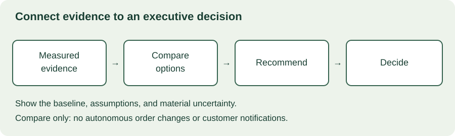

MODULE 04 · ADVANCED FIELD ENGINEERING
Harbor's pilot works. Now its executive sponsor asks whether to fund expansion. A feature tour cannot answer that question. You need to explain the decision, the expected outcome, the alternatives, and the evidence that would justify spending more.
Learning objectives
- Translate technical progress into a decision-oriented executive brief.
- Separate measured facts, assumptions, forecasts, and commitments.
- Compare alternatives against an explicit baseline.
- Estimate capacity value without mislabeling it as cash savings.
- Present uncertainty, answer challenges, and record a clear decision.
Allow 100–130 minutes. Prerequisites: Chapters 11, 15, and 21. Produce a one-page business case and a three-minute briefing. All customer names and numerical examples are fictional.
22.1 Start with the decision
Identify who can approve what, by when, and within which constraints. “Update leadership” is a meeting purpose, not a decision. “Approve a six-week supervised expansion within the stated budget, with a review before further rollout” gives the audience something concrete to assess.
Executive communication should preserve the reasoning that matters while reducing irrelevant implementation detail. A latency improvement matters if it changes the user's workflow or meets an acceptance requirement. If the operational effect is unmeasured, report the technical result honestly and state what remains to be tested.
Use this sequence: recommendation, customer problem, evidence, options, costs and benefits, uncertainty, and decision requested. Keep detailed architecture and calculations available in an appendix. Do not hide material risks there; risks that could change the decision belong in the main brief.

22.2 Separate evidence from inference
A pilot observation is not automatically a forecast for every site. Label the sample, period, task definition, and measurement method. Explain whether the comparison used similar cases and whether other changes could account for the result. Include review and correction time in task measurements.
| Statement type | Example | What to make explicit |
|---|---|---|
| Measured fact | Observed review time decreased in the pilot sample | Sample, baseline, measurement method, variation |
| Assumption | 60% of eligible cases will use the workflow | Basis and sensitivity |
| Forecast | Expansion may release 120 hours monthly | Formula, conditions, uncertainty |
| Commitment | Owner will report adoption after six weeks | Accountable owner and agreed date |
Avoid implying causation from a simple before-and-after comparison when training, staffing, case mix, or seasonality changed too. Where a controlled comparison is impractical, state the limitation and gather additional evidence. Precision in a spreadsheet cannot compensate for weak inputs.
22.3 Compare real alternatives
Include the current workflow and at least one plausible smaller intervention. For Harbor, the alternatives might be improving the checklist, extending the supervised pilot, or expanding to every warehouse. Compare them against the same objectives and planning horizon.
Doing nothing new still has consequences: existing operating effort, unresolved defects, and missed opportunities may continue. Conversely, expansion has migration, training, support, and operational costs. Do not construct an obviously poor alternative merely to make the preferred option appear inevitable.
| Option | Potential advantage | Key limitation |
|---|---|---|
| Improve the checklist | Low implementation effort | May leave repeated manual work |
| Supervised expansion | Tests another site and adoption conditions | Limited immediate reach; needs review capacity |
| Full rollout | Broader potential impact | Greater exposure to untested variation and support demand |
HM Treasury's Green Book describes appraisal in terms of costs, benefits, and risks of options for achieving objectives. It is UK public-sector guidance; this lesson borrows the comparison discipline, not its jurisdiction-specific approval rules or a claim of formal compliance.
22.4 Distinguish capacity value from cash
If a workflow saves time, staff may handle more cases, reduce backlog, improve quality, or spend time on higher-value tasks. That does not automatically reduce payroll or release budget. A monetary valuation of time is an analytical estimate; a cash-saving claim needs a specific, credible mechanism and an accountable owner.
Avoid double-counting the same released time as both reduced labor expense and additional productive capacity. Separate potential revenue from confirmed revenue, and do not count all customer revenue as attributable to one feature. Keep difficult-to-price outcomes, such as improved confidence in decisions, visible without inventing precise dollar values.
Include setup, integration, training, adoption assistance, recurring service charges, support, and measurement effort. Use a consistent currency and horizon. For a real approval, align costing and benefit categories with the organization's finance owner. The calculator below is a simplified educational model, not a discounted cash-flow analysis.
22.5 Interactive business-case lab
Assume monthly eligible volume stays constant, each adopted case saves the same number of minutes, and the stated adoption rate applies from month one. All amounts use the same currency. The value per hour is a scenario assumption, not a claim of cash released.
Capacity-value scenario
The defaults imply 1,200 adopted cases and 120 released hours monthly. At 50 currency units per hour, six months of gross capacity value total 36,000. Setup plus recurring costs total 30,000, leaving a modeled net value of 6,000. This does not establish 6,000 in cash savings.
At 30% adoption, six-month gross value is 18,000 and net value is −12,000. Break-even adoption under this simplified model is 50%. That threshold is meaningful only under the other stated assumptions. Ramp-up, changing volume, implementation delays, discounting, taxes, and quality effects are excluded.
22.6 Write the one-page brief
Illustrative Harbor decision brief
Decision: Authorize a bounded supervised expansion, with spending and responsibilities agreed before launch.
Problem: Coordinators spend time reconciling exception evidence. The pilot suggests a workflow improvement, but performance at another warehouse is untested.
Options: Improve the checklist, expand under supervision, or roll out broadly. Recommend supervised expansion to test site variation and adoption before increasing exposure.
Value scenario: Under the lab's assumptions, six-month modeled net capacity value is 6,000; at half the adoption rate it is −12,000. Neither number is a cash-saving commitment.
Conditions: Named operations owner, approved access boundaries, measured review time and quality, and a fallback to the existing workflow.
Next decision: Review actual adoption, outcomes, costs, and support burden after six weeks before authorizing further scope.
Replace every illustrative assertion with actual evidence before using this brief externally. A concise page should make uncertainty easier to inspect, not remove it. GOV.UK's writing guidance emphasizes clear language and reader needs; those principles are useful when explaining a technical decision to a mixed audience.
22.7 Deliver the three-minute briefing
Use the opening to state the recommendation and requested decision. Spend the middle on the evidence and alternatives. Close with the material uncertainty, next validation step, and action needed from the audience. Practice aloud; a page that reads well may still be too dense to present.
Use charts only when they clarify a comparison. Label units, time horizons, and whether values are measured or modeled. Keep the baseline and scenario assumptions visible. A chart showing cumulative benefit without cumulative cost can create a misleading impression even if every plotted number is correct.
Prepare short answers to likely challenges: “Why this option?”, “What if adoption is lower?”, “Who owns the outcome?”, and “What would make us stop?” If a question requires evidence you do not have, say what is known, what is unknown, and when you will return with an answer.
22.8 Handle challenges without overstating certainty
Executive challenge
The sponsor says, “So we can remove 120 paid hours from next month's budget?” What is the strongest answer?
Disagreement can reveal different objectives. Operations may value backlog reduction while finance needs budget certainty. Record both rather than forcing them into one unsupported return figure. If executives choose a different option, document the decision, assumptions, owner, and follow-up evidence.
After the meeting, confirm the agreed scope and conditions. Approval to investigate is not approval to deploy. Approval for one warehouse is not approval for all warehouses. Update the delivery plan so the executive decision and the engineering commitments remain aligned.
22.9 Business-case workshop
Scenario: Harbor's sponsor wants full rollout based on the default lab model. The time-saving estimate comes from 30 relatively simple cases at one site. Adoption is forecast at 60%, but the second site's workflow owner is not yet committed. Support effort is included in recurring cost as an estimate, not a measured figure. Finance asks for a guaranteed six-month cash saving.
Spend 25–35 minutes drafting a one-page recommendation and a three-minute talk track. Compare the baseline and a smaller experiment. Calculate the 60% and 30% adoption scenarios, explain the cash-versus-capacity distinction, and propose evidence that could change the decision. Include a named role for each benefit and risk, without inventing actual customer personnel.
Worked response outline
Recommend a supervised second-site trial rather than guaranteeing broad rollout benefits. Report modeled net values of 6,000 at 60% adoption and −12,000 at 30%, with no claim that either equals cash savings. Validate time savings on representative cases including correction effort, confirm adoption ownership, and measure support demand. Ask finance and operations to agree how released capacity would be used. Set a review date and conditions for expansion, revision, or stopping.
| Rubric | Points |
|---|---|
| Clear decision and alternatives | 20 |
| Evidence quality and explicit assumptions | 25 |
| Correct scenario math and benefit classification | 25 |
| Risk ownership and next validation | 20 |
| Concise, audience-appropriate briefing | 10 |
22.10 Verified resources
Primary-source pages checked October 28, 2026. The calculator and customer examples are instructional, with simplified assumptions.
- HM Treasury: The Green Book — introduction to appraisal of options, costs, benefits, and risks in the UK public sector.
- GOV.UK: Writing guidelines — clear, reader-focused writing principles.
22.11 Knowledge check
22.12 Completion check
You can now connect technical evidence to an executive decision, show the assumptions behind a business case, and explain uncertainty without losing the recommendation.
Field notes
Which benefit in your current project is measured, which is forecast, and who owns realizing it?